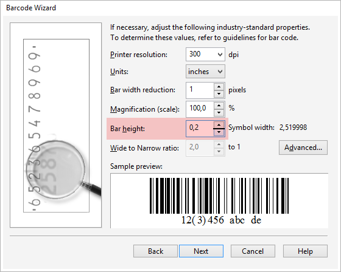

CardGenerator: вопросы и ответы
Sancho / 29.04.2014, 23:25/23:26
Форум:
Вопрос: как настроить высоту штрих кода?
Ответ: Высота штрих-кода может быть настроена только в параметрах BarCode Wizard (Мастера создания Штрих-кодов). Параметр отвечающий за высоту штриха (1.0 — значение по умолчанию):

К сожалению, значение нужно подобрать вручную.
Нужно делать через настройку штрих-кода (кнопка с иконкой штрих-кода) в главном окне макроса.
Вопрос: Что обозначает сообщение "Неправильный формат данных"?
Ответ: Сообщение говорит о том, что данные для штрих-кода не соответствуют допустимым по количеству символов.
В скобках указано, что именно макрос пытается передать из файла данных в генератор штрих-кода.
Для решения этой проблемы, необходимо проверить файл данных, и исправить несоответствие.

Не подскажите, а как векторизовать конечный штрих-код?
знаю 2 способа которые сам использую:
1 скопировать в новый документ штрихкод и экспортировать в eps, потом eps импортировать в документ
2 выбрать штрихкод и трасировать.
alfanasiy, перед запуском процесса создания штрих-кодов, необходимо установить соответствующий параметр:
Всем Привет!!! Вопрос такой,может кто нибудь знает как можно сделать так,написать текст (пару-тройку слов) и размножить его всеми установленными на компе шрифтами одним-двумя нажатиями,а то работа у меня такая одну фразу надо делать разными шрифтами,задолбался уже,времени много уходит,а его жаль.Заранее спасибо за любую информацию.
Добрый день, очень помог макрос, упрощал себе работу оч долгое время, но возникла тут проблемка: как сделать что бы он генерировал штрих коды в зеркальном виде?
не
1 2
3 4
5 6,
а
2 1
4 3
6 5
???
Просто тираж лицевых сторон отпечатан где нумерация идет по порядку, а вот что бы совпадала с оборотной стороной карты, необходимо именно "зеркало".
maxgalll, перед указанием блоков макросу, в главном окне макросе снять галочку автоматического распознавания блоков, и выделить их не все сразу, а в том порядке в котором нужно с зажатым Shift.
Друзья, Привет!!! Подскажите, может кто-нибудь знает как можно сделать так, вставить штрих-код не с белой подложной, а с подложкой фона (у меня фон серого цвета). Надо с генерировать 5000 в ручную не очень хочется)))
card67, в макросе есть настройка "Удалять фон штрих-кода"
Добрый день. Подскажите пожалуйста, функция "удалять фон штрих-кода" распространяется на все виды штрих-кодов, или на EAN-13 она не действует. И ещё, при генерации штрих-кодов должен оставаться снизу сгенерированного штрих-кода другой штрих-код, который выступал шаблоном?
card67, должна на все, но она работает если штрих-код вставляется в кривых (отдельная опция, там же в настройках).
Шаблонные элементы нужно удалять, или генерировать данные в новый документ.
Страницы